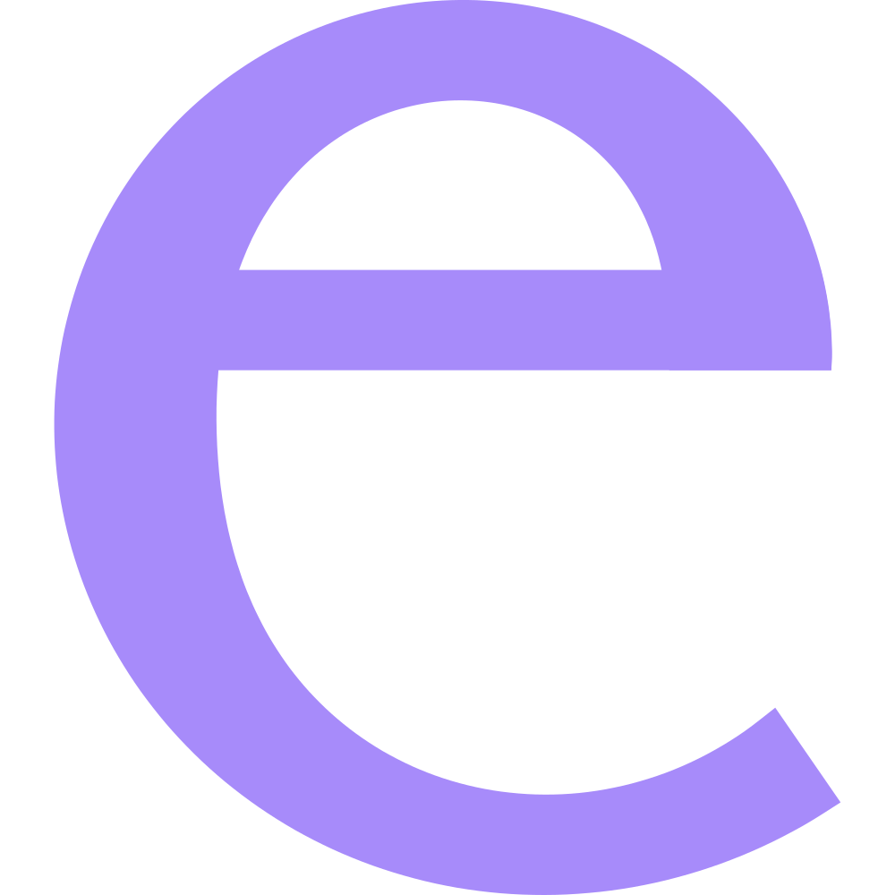

e
a minimalist agent harness, with a GUI
The inner loop of an agent coding tool — converse → call tools → apply → repeat — driven by a slim Rust core and rendered in a tiny, hand-tuned webview. No Electron, no framework; the whole renderer is ~20 KB.
What it does
- A real harness, not a wrapper. Tools — shell, files, skills — run locally and feed back until the task is done. Cancellable with Esc.
- Any OpenAI-compatible provider. OpenAI, Ollama, LM Studio, vLLM, Together, OpenRouter, or your own gateway — several at once, switched per chat.
- Chats and projects, each with its own workspace and token budget. History compacts itself as you approach the context window.
- Everything streams: tokens, reasoning, tool cards, live token and cost counters.
- Yours: keys and settings stay in
~/.e/config.json.
Extending it
Five surfaces. Four are folders you drop somewhere — no rebuild, no restart.
toolsRust structs, one traitrebuild
providersany OpenAI-compatible endpointSettings ⚙
skillsSKILL.md prompt packages, loaded on demand~/.e/skills
pluginsJS modules: tools, commands, views, guards~/.e/plugins
mcpexternal Model Context Protocol serversmcp.json
Run it
# Node ≥ 18, Rust stable, Tauri prerequisites
git clone https://github.com/pjperez/e
cd e && npm install
npm run tauri dev # hot-reload dev window
npm run tauri build # one native executable